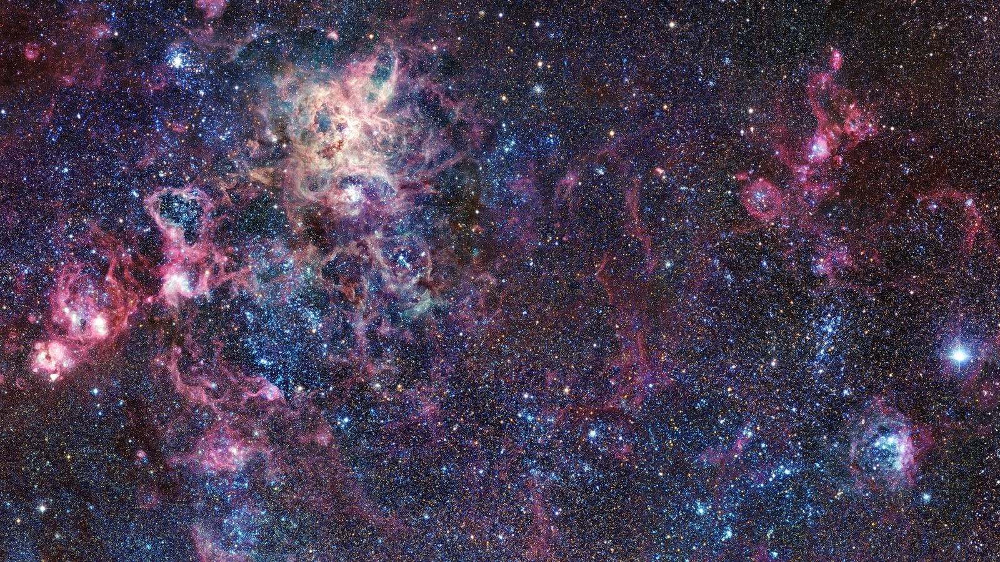

刚才看见Win10锁屏界面的星空图特别好看，想要下载下来发微博。查了一下知乎上的方法：
win + r然后在弹出的运行框中运行
%localappdata%\Packages\Microsoft.Windows.ContentDeliveryManager_cw5n1h2txyewy\LocalState\Assets
会弹出一个文件夹，貌似锁屏图片文件就是存在这个文件夹里，只不过文件都没有后缀，想要看得手动加.jpg才能打开看。
使用python实现，先查了一下用python怎么得到这个%localappdata%路径,具体实现:
import os
localappdata = os.environ['LOCALAPPDATA']有了路径然后就可以用pillow把图片转存出来。这是全部代码：
import os
from PIL import Image
from shutil import copy2
localappdata = os.environ['LOCALAPPDATA']
srcPath = fr'{localappdata}\Packages\Microsoft.Windows.ContentDeliveryManager_cw5n1h2txyewy\LocalState\Assets'
destPath = fr'{os.getcwd()}\pics'
fileList = os.listdir(srcPath)
os.makedirs(destPath, exist_ok = True)
for item in fileList:
im=Image.open(srcPath + '\\' + item)
copy2(srcPath + '\\' + item, destPath + '\\' + item + '.jpg')
print('成功拷到一个图片~~')